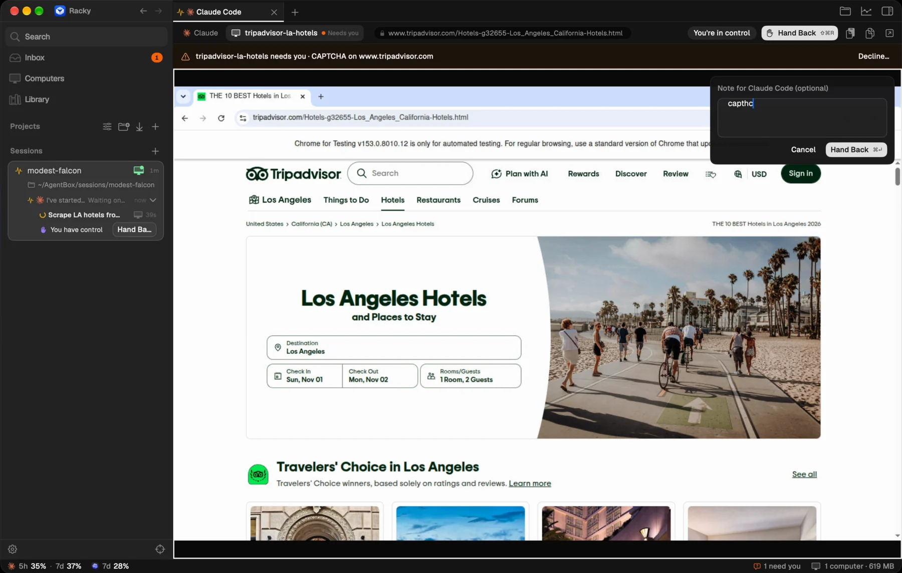
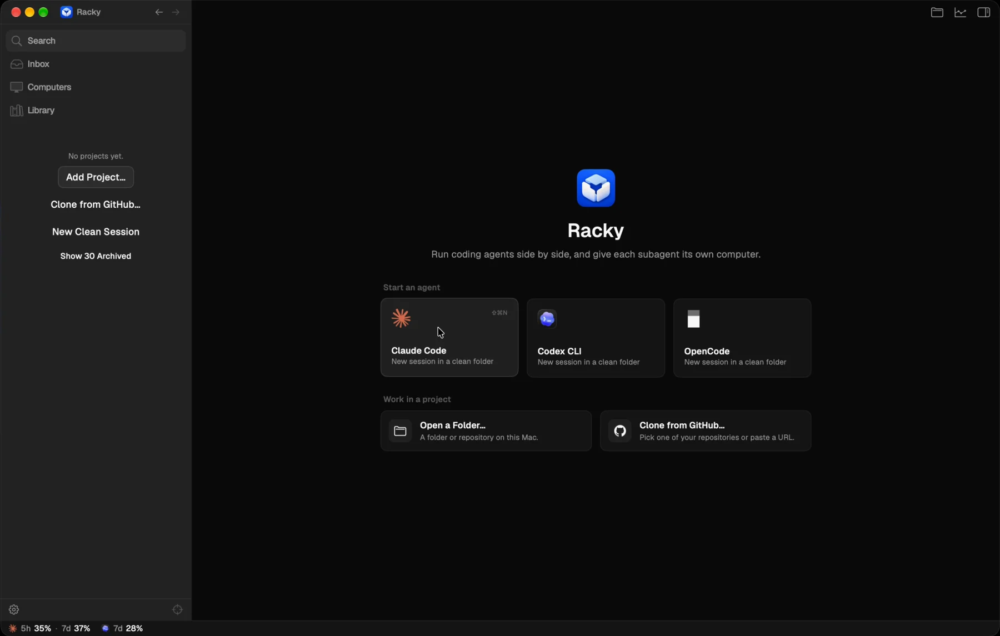
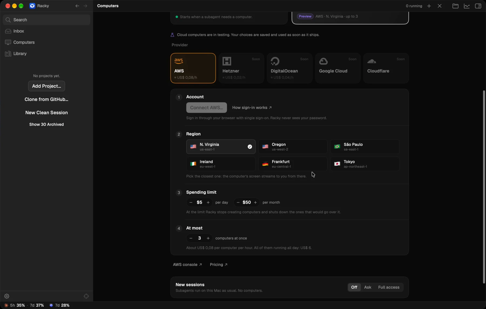

Take Over
When the site asks for a human, you step in.
The subagent flags the captcha and waits. You take control of its browser, solve it, and hand it back with a note. It continues from where it stopped.
Racky is a Mac app for Claude Code, Codex and OpenCode. Each subagent works on an isolated machine with a real browser you can watch live, and take over whenever it needs a human.
Give a task to Claude Code. It spawns subagents, and each one gets a computer of its own: a browser, a terminal, an HTTP client and a log of every request it makes.
Claude Code, Codex and OpenCode in tabs and splits, each session in its own folder or worktree.
Isolated machines with a real browser, terminal and HTTP tools. Many run in parallel and nothing touches your Mac.
Watch every computer live. Captcha or login? Take control, solve it, hand it back, and the agent carries on.
Traffic goes through a proxy that records each request, so every result comes with the evidence behind it.
Per session: no computers, ask before each one, or full access. You approve, the agent waits.
Computers run right on your Mac today. Cloud computers for more parallel power are coming.
The subagent flags the captcha and waits. You take control of its browser, solve it, and hand it back with a note. It continues from where it stopped.

Start Claude Code, Codex or OpenCode in a clean folder, open a folder you already have, or clone a repository from GitHub.

On this Mac for free, and soon in the cloud. Choose whether new sessions get computers by default.

No Docker, no setup. Racky runs its computers with the virtualization built into macOS.
Get Racky.dmg, open it and drag Racky into Applications.
The first time, macOS says it can't verify the developer. Click Done.
In System Settings › Privacy & Security, scroll down and click Open Anyway.
Confirm with Touch ID. From now on Racky opens normally, and the setup checklist walks you through the rest.
Rather use Terminal? This installs and opens Racky with no prompt:
$ curl -fsSL https://github.com/gabrielgreco1/racky/releases/latest/download/install.sh | bash